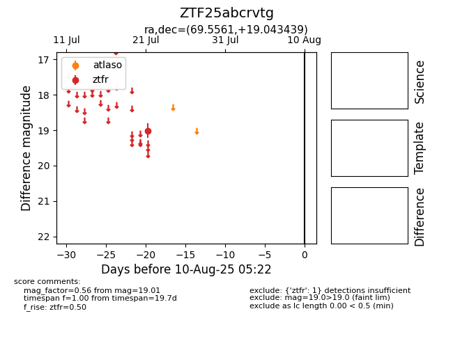

Target ZTF25abcrvtg at 2025-08-10 05:22, see:
FINK: fink-portal.org/ZTF25abcrvtg
Lasair: lasair-ztf.lsst.ac.uk/objects/ZTF25abcrvtg
ALeRCE: alerce.online/object/ZTF25abcrvtg
alt names
ZTF25abcrvtg (ztf,fink)
coordinates:
equatorial (ra, dec) = (69.5561,+19.04344)
galactic (l, b) = (179.2235,-18.24873)
photometry
last ztfr=19.01
1 ztfr detections
